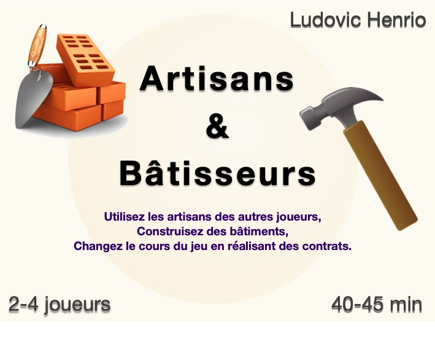

Artisans et bâtisseurs — Jeu de société
|
|
Caractéristiques du jeu
Un jeu stratégique ou vous devrez recruter les bons artisans.La mécanique la plus originale de ce jeu est le recrutement et l'utilisation des artisan. Chaque joueur peut à son tour recruter un artisan pour le tour suivant. Chaque artisan propose differents emplacements où les joueurs peuvent venir placer un travailleur pour obtenir des resources ... sauf que placer un travailleur a un coût qui se paye au propriétaire de l'artisan! et on ne peut pas placer de travailleur sur son artisan. Artisans et bâtisseur se base donc également sur de la gestion de resources simple et de la construction de moteur de production. Petit plus: les joueurs pourront tenter de remplir des contrats à partir ds badges dessinés sur les bâtiments pour obtenir un bonus immédiat qui pourrait changer le cours de la partie. Il faudra pour cela avoir les bons bâtiments visibles. |
 |